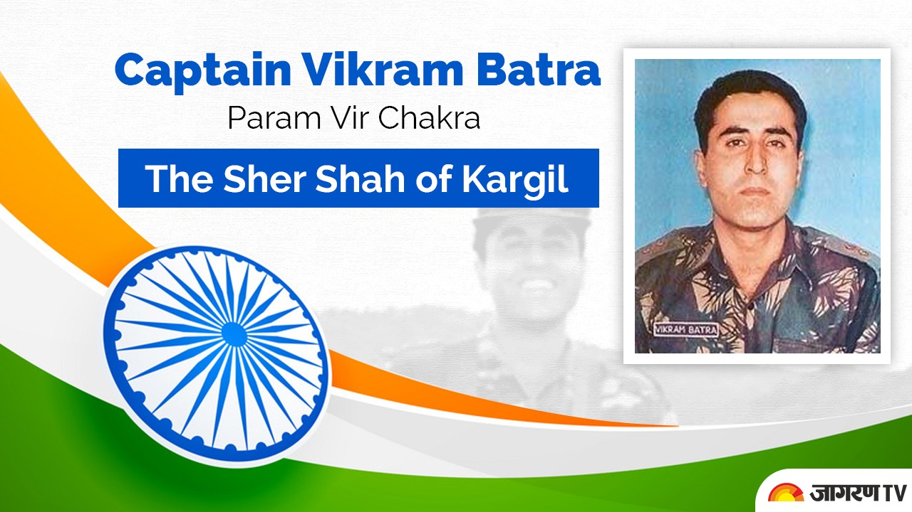

Captain Vikram Batra
"Shershah"

Being honoured with "Param Vir Chakra"(Posthomous) for his martyrdom in the 1999 Kargil War.
Vikram Batra's glories
- 1974: Born in Palampur,Himachal Pradesh
- 1974: He was the elder of twin sons. His brother was named Vishal Batra.
- 1990: Vikram and Vishal represented their school at All India KVS Nationals.
- 1992: He passed his Class 12 Board Examination in 1992 with 82% marks
- 1994: In 1994, he was selected to represent his college in Republic Day Parade as an NCC Cadet.
- 1995: Vikram was selected in Merchant Navy in 1995 at a shipping company headquatered in Hong Kong.
- 1995:
- Completed his Bachelor's Degree
- Enrolled in an MA English course at Punjab University in Chandigarh.
- Worked as Branch Manager of Travelling Agency while studying
- Met Dimple Cheema and fell in love.
- 1996: He passed CDS Examination and was called for an interview at SSB Alahabad and got selected
- 1997: Passed out from IMA and was commisioned as Lieutinant in Indian Army.
- 1999:
- Captured point 5140 with Delta Company.
- Promoted as a Captain.
- On 7th July 1999 Captain Vikram Batra took his last breath serving his country.